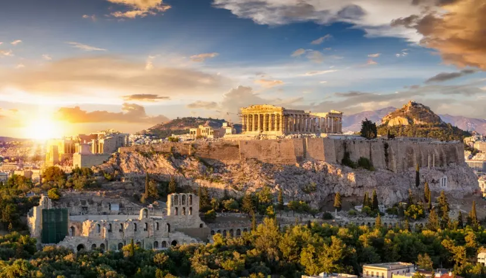
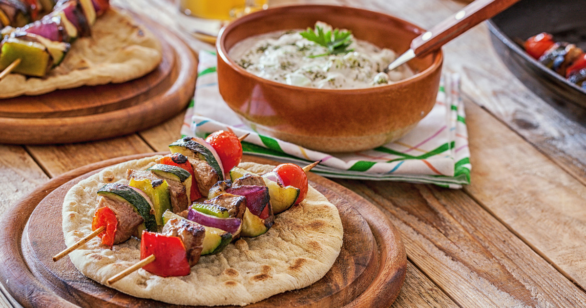
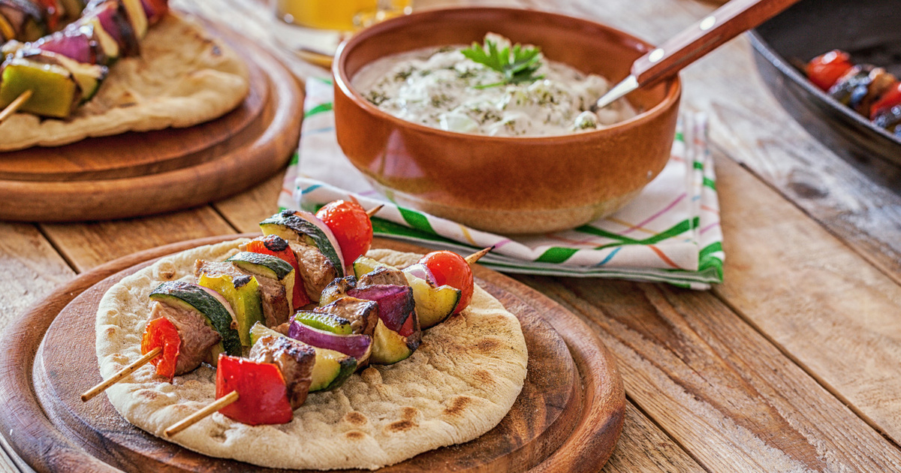
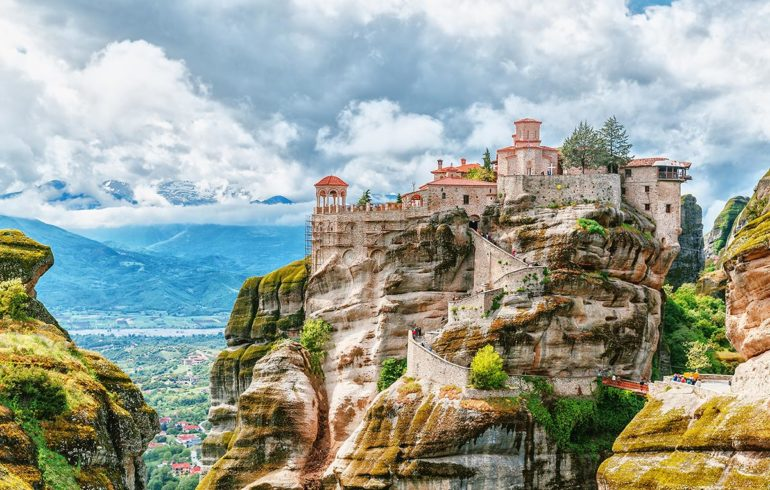
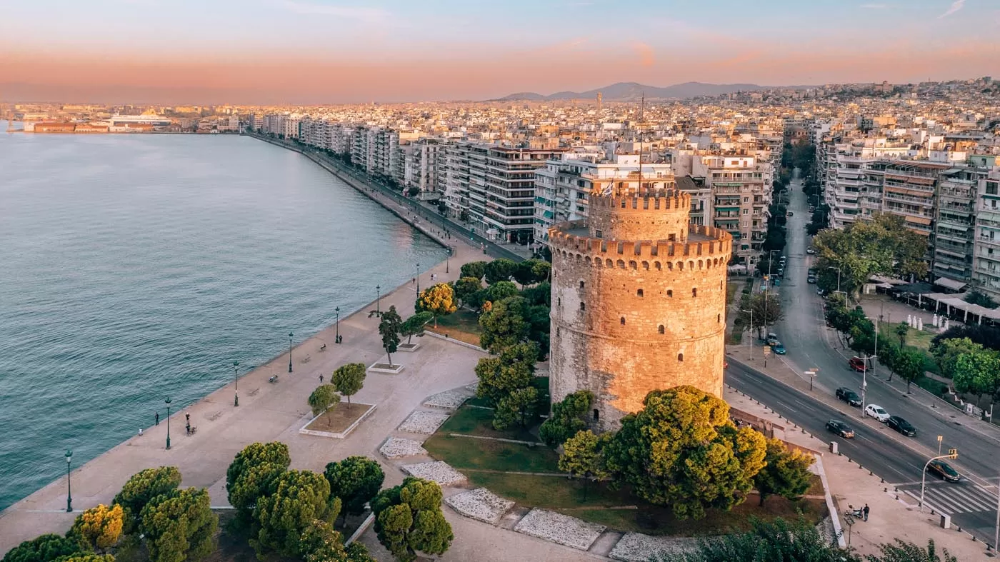

Kamena Vourlában járva ellátogattam a lenyűgöző Mitsis Galini szállodába, ahol fantasztikus élményekben volt részem. A szállodából könnyen megközelíthető a híres Thermopülai-szoros, amit mindenképpen szerettem volna látni. Ahogy végigsétáltam a szoroson, elképzeltem a történelmi csatát, amely ott zajlott. A Mitsis Galini medencéjéből csodálatos kilátás nyílik a környező hegyekre, ami még különlegesebbé tette az ott tartózkodást. Este, a szálloda teraszáról gyönyörködtem a naplementében, és hálás voltam, hogy ilyen különleges helyen lehetek.


Delphoiban járva azonnal magával ragadott a hely történelmi és spirituális atmoszférája. Meglátogattam az Apollón-templomot, ahol az ókori jósdát működtették, és elmerültem a múlt titkaiban. A Szent Úton sétálva elképzeltem, ahogy a zarándokok sorra érkeztek ide, hogy tanácsot kérjenek a Püthiától. Felmentem a híres delphoi színházhoz, ahonnan pazar kilátás nyílt a környező hegyekre és völgyekre. A múzeumban megcsodáltam a delphoi kocsihajtó szobrát, ami az ókori görög művészet egyik remekműve. Végül a Kastalía-forrásnál időztem, ahol az ókori görögök megtisztulási rituálékat végeztek, és éreztem a hely szent energiáját.

Skiathos-szigetén töltöttem egy csodálatos napot, ahol a kristálytiszta víz és a homokos strandok teljesen elvarázsoltak. Meglátogattam a híres Koukounaries strandot, ami a puha, aranyszínű homokjáról híres. Egy 5 órás hajókiránduláson vettem részt, amely során felfedeztem a környező kisebb szigeteket és eldugott öblöket. Skiathos városának hangulatos, macskaköves utcáin sétálva élveztem a helyi tavernák ízletes görög ételeit. A Bourtzi-félszigeten található régi erőd romjai között barangolva a történelem és a természet különleges harmóniáját éltem át.
Az egyik érdekesség Skiathos-szigettel kapcsolatban, hogy itt forgatták a híres "Mamma Mia!" című film számos jelenetét. A film színes és vidám hangulata tökéletesen visszaadja Skiathos gyönyörű tájainak és varázslatos környezetének atmoszféráját. Az Agios Ioannis kápolna, ahol Sophie esküvője zajlott, azóta is népszerű látványosság lett a turisták körében. A film sikerének köszönhetően sokan látogatnak el ide, hogy saját szemükkel lássák azokat a helyeket, ahol a kedvenc jeleneteik játszódtak.


Athénban járva először az Acropolis felé vettem az irányt, hogy megcsodáljam a Parthenont és az Erechtheiont. Az ókori épületek közelsége lenyűgözött, és a Dionüszosz színház is mély benyomást tett rám. Utána ellátogattam a monumentális Zeusz Templomához, amely hatalmas oszlopaival és történelmével elbűvölt. A Hadriánusz-kapu is a város egyik lenyűgöző látványossága volt, ahol megálltam egy pillanatra, hogy megcsodáljam a római kori építészetet. Az Olimpiai Márvány Stadionban, ahol az első modern olimpiát tartották, éreztem a sport és a történelem összefonódását. Egy sétát tettem a gyönyörű Nemzeti Kertben is, ahol a természet nyugalmát élvezhettem. Az Athéni Görög Parlament előtt megfigyeltem az őrségváltást, ami igazán különleges és hagyományőrző élmény volt. A városban töltött idő során Athén gazdag történelme és kultúrája teljesen elvarázsolt.
Lihas-sziget egy festői kis sziget, amely a kikapcsolódás és a természet szerelmeseinek paradicsoma. A szigetet körülvevő kristálytiszta tenger tökéletes hely a búvárkodáshoz és a snorkelinghez. Sétálva a sziget szűk, macskaköves utcáin, autentikus görög hangulatot éreztem, amit a helyi tavernák és boltocskák tovább fokoznak. Lihas dombjairól csodálatos kilátás nyílik a környező szigetekre és a végtelen kék tengerre. A sziget történelme is lenyűgöző, számos ősi romot és épületmaradványt fedezhetünk fel, amelyek mesélnek a múlt dicsőséges időszakairól.


 



A Meteora lenyűgöző sziklatornyai felett állva, Kalambaka városa alant elterülve különleges látványt nyújtott. Az egyik első hely, amit meglátogattam, a Szent István kolostor volt, amely a sziklák peremén állva lélegzetelállító kilátást biztosít. A kolostor belső udvara és freskói mély vallásos áhítatot sugároztak. A Varlaam kolostorhoz vezető út meredek és kihívásokkal teli volt, de a fáradozás megérte, hiszen az ottani nyugalom és szépség egyedülálló élményt nyújtott. A kolostorokban élő szerzetesek és apácák életmódja különösen inspiráló volt, ahogy a csendben és imádságban töltött idő fontosságát hangsúlyozták. Kalambaka városából indulva a Meteora sziklái közé kirándulva éreztem a hely spirituális és történelmi jelentőségét. Ez az élmény emlékezetes marad, hiszen a Meteora különleges harmóniában egyesíti a természet csodáit és az emberi hit megnyilvánulásait.
Thesszalonikiben tett látogatásom során elsőként a híres Fehér Tornyot néztem meg, amely a város jelképévé vált. Sétám során eljutottam a lenyűgöző Galerius ívéhez is, amely a római császár dicsőségét hirdeti. A közeli Rotonda Római Templom belső tere lenyűgözött a freskóival és hatalmas kupolájával. A Szent Demeter-bazilika, a város védőszentjének temploma, különösen megható volt számomra, és sok időt töltöttem itt az imádságban és elmélkedésben. Thesszaloniki tengerparti sétányán sétálva megcsodáltam Nagy Sándor szobrát, amely büszkén tekint a tenger felé. Ez a város gazdag történelmi és kulturális örökségeivel mély benyomást tett rám, és örökre szívembe zártam.
